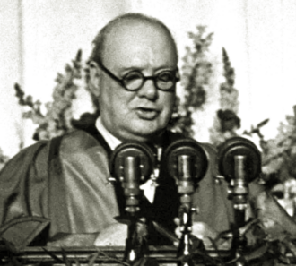
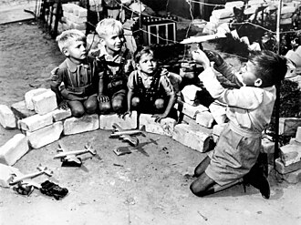

Part V · Cold War opens · Chapter 14
Inherits: Pacific & Hiroshima (ch. 13) · Feeds: Korea (ch. 15)
The Cold War’s First Sentence
On the evening of 8 December 1881 the Ringtheater in Vienna caught fire shortly before the curtain rose on Offenbach’s Tales of Hoffmann, and several hundred people in the auditorium did not get out. Within a few years the Austrian and German building codes required every theatre to hang a sheet of iron on a counterweight, lowered between the stage and the house and tested on a schedule, under a name the codes made ordinary: eiserner Vorhang, iron curtain. Drury Lane had been advertising one since 1794. The thing was fire-safety equipment for a hundred and fifty years before a man at a lectern in Missouri used its name for a continent.
The previous chapter left the bomb with a second audience. Three of those classrooms — the Italian, the British and the American — wrote that Hiroshima was also addressed to Moscow, and the British one goes furthest: eighteen pages after the bombing, in the chapter on how the Cold War began, Lowe returns to the same event and gives Truman a new aim, “to show Stalin what might happen to Russia if he dared go too far.” One bomb, relabelled from the end of one war into the opening move of the next. That relabelling is the job every book on this shelf has to do somewhere between 1945 and 1949, and no two of them do it in the same place.
On 5 March 1946, out of office, with the President of the United States sitting on the platform behind him, Churchill said at Westminster College in Fulton, Missouri that an iron curtain had descended across the continent. He had not invented the phrase.

Where does your textbook begin the Cold War — with a speech, a new president, a Soviet design, or with no first move at all?
1 Fixed points
The dates every book below shares.
- 4–11 February 1945: Yalta. Roosevelt, Churchill and Stalin agree occupation zones for Germany, a Declaration on Liberated Europe promising free elections, Soviet entry into the war against Japan, and a founding conference for a new world organisation. 17 July – 2 August 1945: Potsdam, with Truman in Roosevelt’s place and Attlee replacing Churchill during the conference. Germany is to be demilitarised, denazified, democratised and decartelised, and is divided into four occupation zones; Berlin, inside the Soviet zone, is divided the same way.
- 25 April – 26 June 1945: San Francisco. The UN Charter enters into force on 24 October 1945 with fifty-one original members.
- 5 March 1946: Churchill speaks at Fulton, Missouri.
- 12 March 1947: Truman asks Congress for $400 million for Greece and Turkey. 5 June 1947: Marshall’s Harvard speech. The Economic Cooperation Act passes in April 1948; roughly $13 billion goes to western Europe by 1952.
- February 1948: the communist takeover in Czechoslovakia. June 1948 – May 1949: the Berlin blockade and the airlift. 4 April 1949: twelve states sign the North Atlantic Treaty in Washington. May 1949: the Federal Republic of Germany; October 1949: the German Democratic Republic. Also 1949: the first Soviet atomic test, and the proclamation of the People’s Republic of China.
2 Three ways to begin
Six of these books tell the European sequence, and they run through almost the same calendar: the two conferences, the speech, the plan, the alliance. The rest stop before it, or were never built to carry it — see Limits. The timelines overlap; the causal openings do not. Each book has to decide whether 1945–1949 is a sequence of choices, a chain of reactions, or a structure that was already waiting to harden.
| Classroom | What starts the Cold War | One-line tag |
|---|---|---|
| No first mover — the freeze arrives without anybody starting it | ||
| RU · Чубарьян 2023 |
«Утвердилась решающая роль двух сверхдержав — СССР и США. Противоречия, а впоследствии и противостояние, конфликтность в отношениях между СССР и США предопределялись идеологическими разногласиями.» “The decisive role of two superpowers — the USSR and the USA — was established. The contradictions, and subsequently also the confrontation, the conflictedness in relations between the USSR and the USA were predetermined by ideological disagreements.” Всеобщая история. Новейшая история 1914–1945, 10 кл., Просвещение 2023 · §3, “The disintegration of the anti-Hitler coalition,” p. 205. The grade-10 volume, declared range 1914–1945; its grade-11 companion is not on this shelf — see Limits. |
Predetermined; nobody moves first |
| UA · Гісем–Мартинюк 2019 |
«У межах нової системи міжнародних відносин США та СРСР уперше „поділили“ світ на двох і визначили свої сфери впливу в ньому.» “Within the framework of the new system of international relations, the USA and the USSR for the first time ‘divided’ the world between the two of them and determined their spheres of influence in it.” |
Two subjects, one verdict of inevitability |
| A speech — and after the speech, a chain of reactions | ||
| BY · Кошелев 2021 |
«США серьезно опасались роста могущества Советского Союза, взявшего под свой контроль Польшу, Чехословакию, Болгарию, Югославию, Венгрию и Румынию.» “The USA seriously feared the growth of the might of the Soviet Union, which had taken under its control Poland, Czechoslovakia, Bulgaria, Yugoslavia, Hungary and Romania.” |
A speech starts it — “as is considered” |
| US · OpenStax 2022 |
“In March 1946, in a speech in Fulton, Missouri, Churchill warned his audience that ‘an iron curtain’ had cut Europe in two, trapping half the continent under Soviet domination.” |
Warned, then infuriated: a chain of reactions |
| A plan and a person — and, in one book, the blame question reopened | ||
| IT · Sabbatucci–Vidotto 2004 |
«L’avvento di Harry Truman alla presidenza degli Stati Uniti, nell’aprile ’45, coincise con un brusco cambiamento del clima e con un generale irrigidimento americano nei confronti dei sovietici.» “The advent of Harry Truman to the presidency of the United States, in April ’45, coincided with a brusque change of climate and with a general American stiffening towards the Soviets.” |
A change of president, and a design |
| UK · Lowe 2013 |
“In the months following Potsdam, the Russians systematically interfered in the countries of eastern Europe to set up pro-communist governments.” |
Systematically — and then the question, reopened |
Take the thinnest first. The Russian volume has no opening move because in its grammar nothing is opened. Its section heading is «Распад антигитлеровской коалиции» — the disintegration of the anti-Hitler coalition, a noun for something that comes apart rather than something anyone takes apart. Then the contradictions between the two states «предопределялись» — were predetermined — and the thing doing the predetermining is a pair of ideas. A passive verb, and behind it an agent that cannot hold a pen. The words «холодная война» do not occur anywhere in the book’s 241 pages, and that is not the calendar running out: the same chapter carries the reader to the two German states of 1949, to the San Francisco treaty with Japan in 1951, and to the Austrian settlement of 1955. There is room for 1955. There is no room for the phrase.
Ukraine reaches the same verdict from the opposite end — by naming everything, then filing it. It is the only column that lets each side state its own motive in its own terms: Stalin’s remark that whoever occupies territory can impose his social order on it, and, three pages later, an American plan built to shed surplus capital and manufacture solvent markets. Then the chapter’s conclusions flatten both into one line: the confrontation «було історично обумовленим», was historically conditioned. Two agendas, fully named, filed under a verdict that removes the choosing. One book has no actors at all; the other has two and then declines to let either of them have decided anything.
Belarus supplies the only starting gun on the shelf, and declines to sign the sentence that fires it. Churchill’s Fulton speech «положило начало „холодной войне“» — laid the beginning of the Cold War — with the hedge «как считается», as is considered, wedged between the speech and the consequence. Read the sentence before it and the grammar is doing something finer still. The Soviet Union does take six countries under its control; it does so in a participle, attached to a noun, inside a sentence whose main verb belongs to the United States, and whose subject is American fear. The seizure is true, present, and grammatically subordinate to somebody else’s emotion.
OpenStax runs the same chain in the other direction. Churchill warned; the Soviet Union, infuriated, cuts the ground routes into West Berlin. The American book’s own government acts in between — the doctrine, the money, the aircraft — but the verbs carrying the causation are a warning and a fury, and a chain can be entered at either end.
Italy dates the change earliest: April 1945, the month Truman takes office, «un brusco cambiamento del clima». It is the only classroom that hangs the freeze on a change of person rather than a change of policy, and it does so in the same paragraph that has the «disegno staliniano di assoggettamento» already taking shape. Both first moves on one page, neither cancelling the other.
Lowe’s adverb is the most agentive word on the ladder. Not “the Russians set up governments” but “the Russians systematically interfered” — an adverb that converts a set of events into a plan. And then, a few pages earlier in the same book, the section that asks this chapter’s question by name and refuses to answer it: Which side was to blame? Three schools, in order — the orthodox account blaming Stalin, the revisionists blaming an American drive for hegemony, the post-revisionists dividing it — with the revisionist case given its own paragraph and its leading proponent named. A British market textbook prints the Soviet historians’ argument at length, on the way to a chapter that will not adopt it.
Three words, three theories of history, and they cannot all be true of the same four years. Something «предопределялись» has no author. Something that happened «как считается» has an author nobody on the page will vouch for. Something done systematically has an author, a plan, and a defence to answer. A student moving between these classrooms is not being handed different facts. They are being handed different jobs: understand a process, repeat an attribution, or weigh a charge.
Where they converge, they converge on the money. Four books — a state monopoly, a ministry list and two market publishers — give the Marshall Plan nearly the same purpose. Belarus: aid «оговаривалось политическими требованиями», conditioned by political demands, so that «США получали мощные рычаги воздействия на Европу» — the USA obtained powerful levers of influence over Europe. Ukraine, in the line quoted above, sends it to shed surplus capital and manufacture solvent markets. Lowe: “A prosperous Europe would provide lucrative markets for American exports; but its main aim was probably political.” OpenStax: because the goods had to be bought in America, the aid “helped ensure that the U.S. economy did not slide into an economic depression now that the war had ended.” They agree about what the money was for. They disagree about whether that is an indictment.
“The North Atlantic Treaty Organization (NATO) — an international intergovernmental organisation, a military-political union of 29 states of North America and Europe that seek to achieve the aims of the North Atlantic Treaty of 1949. In 2018 Ukraine was recognised as an aspirant country on the path to joining the alliance.”
UA · Всесвітня історія, 11 кл. (2019) · the definition box printed beside the account of 4 April 1949, p. 18That box is the clearest single answer to the question of whose present is doing the choosing. It is a definition of a 1949 alliance, and it ends in 2018, in the present tense, with the country of the student holding that textbook on the waiting list. The same paragraph tells that student the USSR regarded NATO as an «агресивного блоку» — an “aggressive bloc,” the words printed inside quotation marks as somebody else’s description. Belarus, one border north, has NATO in a diagram opposite the Warsaw Pact and asks the class whether those organisations still exist and whether it matters today. Same alliance, same year, two live questions pointing in opposite directions. A first sentence is chosen from a present, never from nowhere.
And then the space where the order is not built at all. China’s volume fills 1945–1949 completely — with the civil war, lesson 25, and the founding of the People’s Republic — and not one of the European order’s names is in it: no Yalta, no Potsdam, no Marshall, no Truman, no iron curtain, no NATO, no Cold War. India’s world-history book does have Yalta and Potsdam in it. They appear once, as the names of conferences that Korean independence campaigners sent delegations to petition: not a world order, a set of doors that somebody knocked on. The same four years that one shelf calls the making of a European order are, on another shelf, a civil war and a set of locked doors — and the people knocking on those doors are Korean. What happens to them is the next chapter.
3 The thread · the borrowed object
On 24 June 1948 the road, rail and canal links into the western sectors of Berlin close, and the power station in the Soviet sector stops feeding the western grid. Rather more than two million people are inside the line. Two days later the first transport aircraft land at Tempelhof, and they keep landing for eleven months. In English that is an airlift: the cargo goes up. In Ukrainian it is a «повітряний міст», in Italian a «ponte aereo», in German a Luftbrücke — an air bridge: the cargo goes across, and a bridge implies two banks with something in between that has to be spanned. The flights are identical in every account. The metaphor is not, and the metaphor is the argument in miniature.

The chapter’s other piece of machinery was borrowed the same way, and it is much older. Five classrooms send the reader to Fulton; only three print the words. Italy gives the sentence in full — «Da Stettino, sul Baltico, a Trieste, sull’Adriatico, una cortina di ferro è calata sul continente», “From Stettin, on the Baltic, to Trieste, on the Adriatic, an iron curtain has descended across the continent” — and Lowe gives the same line in English, with six words no other book has: Churchill “repeated a phrase he had used earlier.” Belarus sends the reader to the town and not the sentence: Churchill delivered «воинственной речью в г. Фултон», a warlike speech in the city of Fulton. Ukraine names the speech three times, summarises what Churchill said about expansion and the “fifth column,” and never prints the phrase at all. Lowe is the only column that hints the words had a life before March 1946. It does not say what that life was.
The life was long, and not respectable. Ethel Snowden, a British Labour delegate who went to Soviet Russia in 1920, wrote of crossing into it: “We were behind the ‘iron curtain’ at last!” On 25 February 1945, in the weekly Das Reich, Joseph Goebbels wrote that if Germany surrendered, an iron curtain would come down over the territory the Soviet Union took. On 12 May 1945, four days after the German surrender, Churchill cabled Truman that “an iron curtain is drawn down upon their front. We do not know what is going on behind.” Goebbels had used the same object for Soviet conquest a year before Fulton; Churchill had used it privately in May. Fulton did not invent the phrase. It made one prior metaphor the name of an age. None of the classrooms that quote Churchill carries any of that, and this is not a charge against them. It is a description of what a phrase is — a used object, picked up by whoever finds it useful.
The era’s other name has its own tangled etymology, and the classrooms cannot agree on who supplied it: Ukraine credits Orwell in October 1945, Italy credits the journalist Walter Lippmann, and both are half right (receipts below). What matters here is what neither name did. No phrase divided Europe. Armies divided Europe, and then treaties wrote the division down. What the words did was make the division sayable in one breath — and once it was sayable, each classroom could choose who gets named as having drawn it: a speaker at a lectern, an American president’s change of temperament, or nobody, because it was predetermined.
The object itself is still working. In traditional houses across Europe the iron curtain is lowered and checked as a matter of licence, and at the Vienna State Opera — a walk along the same ring road from where the Ringtheater stood — the panel has carried a different commissioned artwork every season since the late 1990s, raised before the music starts. Anyone who has sat in an old theatre and watched a great iron slab go up has watched the Cold War’s name lift out of the way.
4 Credit where due
Fairness, paid in installments
Lowe (UK) prints the competing schools instead of the answer, and then does the arithmetic that deflates his own side’s best story: Marshall Aid “averaged only about 2.5 per cent of the total national income of the 16 countries involved,” a sentence that tells a British examinee that the most celebrated act of American generosity may not have been the thing that saved Europe. OpenStax (US) tests its own doctrine on the case where it fails — “Truman was mistaken in assuming all communists acted under the direction of the Soviet Union,” and, on Greece, “There is little to suggest that Stalin violated this agreement about Greece — until the United States got involved. Once the fate of Greece became of interest to Truman, Stalin took note of it as well.” It is an American textbook saying that an American containment policy manufactured the Soviet involvement it was written to contain. Гісем–Мартинюк (UA) lets both superpowers state a purpose in their own words before the conclusions box files everything under historical necessity. Sabbatucci–Vidotto (IT) builds an actual causal sequence — Bretton Woods, the dollar as reserve currency, the Cominform, the currency reform, the blockade, the Atlantic Pact. It is unfair to hold schoolbooks to a university manual; it is fair to notice what a schoolbook drops when it compresses.
5 Where this stops being true
Limits
This chapter is six books, not a world. Most of what is missing from it is missing by design — a syllabus that stops before 1945, or was never written to carry a European story. The Chinese volume in this corpus is 中外历史纲要 上, the Chinese-history half of the course; the companion world-history volume 下 is not in the corpus, so its zero is a limit of our shelf and not a verdict on a curriculum. The German source is a federal civic-education booklet on National Socialism, and it stops where its subject stops. Sudan’s book is a national and Arab history to 1948.
Russia is the awkward one, and the awkwardness is ours. The volume here is the grade-10 book, whose declared range is 1914–1945; the grade-11 companion that covers 1945 onward is not in this corpus. So the absence of “Cold War” from these 241 pages is a fact about this edition, not a demonstration about Russian teaching. What can be said is narrower and still worth saying: the book does carry its postwar chapter to 1955 without using the phrase. The grade-11 poster aid we hold as a stopgap does use it — and there the Berlin blockade appears not as a narrative but as a row in an answer key, «Первый Берлинский кризис (блокада Западного Берлина)», 1948, in a table whose left-hand column is headed «Советские лидеры» and whose entry for that row is Stalin. A crisis with no verb, filed under a name.
Two of these books teach a different count for the same conference, and both are printed here as they stand. OpenStax says that at Yalta the Allies confirmed “the division of Germany and Berlin into three occupied zones (later expanded to four).” Sabbatucci–Vidotto says that at Yalta it was established “that Germany would be divided into four zones of occupation (one of which reserved for France).” Two market-published books, no ministry between them and the page, same conference, different count.
6 Receipts
- UA — О. Гісем & О. Мартинюк, Всесвітня історія, 11 кл., рівень стандарту (Ранок 2019, МОН-approved): §2 “Creation of a new system of international relations,” Yalta-Potsdam system pp. 9–10, UN pp. 11–12, conclusions p. 13; §3 “Formation of a bipolar world,” Soviet occupation of Central-Eastern Europe and Fulton p. 14, definition of the Cold War p. 14, Truman Doctrine and Marshall Plan p. 16, First Berlin Crisis and the New York Herald Tribune line “The era of Yalta has ended” p. 17, NATO and the Warsaw Pact pp. 18–19; Bretton Woods p. 20. Printed page = PDF page − 1.
- UK — Norman Lowe, Mastering Modern World History, 5th ed. (Palgrave Macmillan 2013), ch. 7 “The Cold War: problems of international relations after the Second World War”: §7.1 “What caused the Cold War?” including “Which side was to blame?”; §7.2(c)–(j) eastern Europe, Truman Doctrine, Marshall Plan, Cominform, Berlin blockade and airlift, NATO, the two Germanies. Printed index: Yalta Conference 125–6 · Potsdam Conference 126 · Iron Curtain 129 · Truman Doctrine 129 · Marshall Plan 124, 130, 191. The Hiroshima reprise quoted in this chapter’s opening is at p. 126.
- US — OpenStax, World History, Volume 2: from 1400 (2022), §13.5 Yalta pp. 555–556 and Potsdam p. 558; §14.1 “The Cold War Begins”: containment and the Long Telegram p. 574, iron curtain p. 574, Truman Doctrine p. 576, Marshall Plan p. 576, Berlin blockade and airlift p. 577, NATO pp. 577–578. Bretton Woods, one sentence, p. 555.
- IT — G. Sabbatucci & V. Vidotto, Il mondo contemporaneo. Dal 1848 a oggi (Laterza 2004): §22.2 Bretton Woods and the dollar, extract p. 500; §22.3 “La fine della ‘grande alleanza’,” Truman’s advent, Potsdam, Fulton, Paris, extract pp. 501–502 (printed ≈ 447–448); §22.4 Truman doctrine, Marshall plan, Cominform, blocco di Berlino, the two Germanies, Patto atlantico, extract pp. 503–505 (printed ≈ 449–451).
- BY — В. С. Кошелев и др., Всемирная история, 11 кл. (БГУ 2021): introduction, Yalta-Potsdam system and the Cold War p. 9; “Yalta-Potsdam system of international relations” named p. 163; §23 “The world after the Second World War,” two great powers, Potsdam disagreements, Fulton, the Marshall Plan p. 166; political conditions, NATO 1949, the Warsaw Pact 1955, the German question and the two German states p. 167. 0 mentions the Berlin blockade and airlift of 1948–49 — in a book that has the Berlin Wall of 1961, its fall in 1989, and the battle for Berlin in 1945. Printed page = PDF page − 1.
- RU — А. О. Чубарьян, Всеобщая история. Новейшая история 1914–1945 гг., 10 кл. (Просвещение 2023): Yalta p. 198, Potsdam p. 200, “The disintegration of the anti-Hitler coalition” p. 205, the four Ds and the two German states of 1949 p. 205, the Far East settlement and San Francisco 1951 p. 206, founding of the UN p. 207, Bretton Woods as a timeline entry only. 0 mentions «холодная война», Маршалл, Фултон, доктрина, железный занавес — in 241 pages; НАТО appears once, in a biographical note on Eisenhower. Stems: Ялт-, Потсдам-, Маршалл, Трумэн/Труман, холодн-, железн-, НАТО, ООН, Сан-Франциск-, блокад- (wartime and Leningrad hits only).
- CN — 《中外历史纲要 上》 (state-compiled, 2019). 0 mentions 雅尔塔 · 波茨坦 · 马歇尔 · 杜鲁门 · 铁幕 · 北约 · 冷战 · 旧金山 · 柏林. The years 1945–1949 are Unit Eight, 第25课 人民解放战争 (p. 163) and 第26课 中华人民共和国成立 (p. 173). 联合国 appears in the wartime Declaration by United Nations of 1942, then as the “联合国军” of 1950, then as the seat restored in 1971 — never as a founding.
- IN — NCERT, Themes in World History, Class XI (post-2022 rationalized). 0 mentions Marshall Plan · Truman · iron curtain · Fulton · San Francisco; NATO hits are false friends. Yalta once and Potsdam twice, both incidental: Korean independence campaigners “sent delegations to appeal to foreign leaders at international meetings, such as the Cairo, Yalta and Potsdam conferences” (p. 175), and a Taiwan box crediting “The Cairo Declaration (1943) and the Potsdam Proclamation (1949)” with restoring sovereignty to China — the Proclamation was issued on 26 July 1945. “Cold War” appears once, as an adjective for the Korean War: “a vintage proxy war of the Cold War era.”
- DE — bpb, Informationen zur politischen Bildung Nr. 316, «Nationalsozialismus: Krieg und Holocaust» (2012). out of scope Potsdam appears once, as the conference at which “Stalin, Harry S. Truman … and Churchill, who was replaced by … Clement Richard Attlee, determined that Germany was to be denazified, democratized, and demilitarized” (extract p. 68); the Cold War appears only as the reason denazification was abandoned: «erschien die Praxis der Entnazifizierung im sich verschärfenden Kalten Krieg zwischen den Westalliierten und der Sowjetunion nicht mehr so wichtig, da die Deutschen nicht als Gegner behandelt, sondern jeweils Bündnispartner werden sollten» — “in the intensifying Cold War between the Western Allies and the Soviet Union, the practice of denazification no longer seemed so important, since the Germans were not to be treated as opponents but were to become alliance partners” (extract p. 70). 0 mentions Jalta · Marshall · NATO · Berliner Blockade.
- SD — وزارة التربية والتعليم, التاريخ للصف الثالث (Khartoum 2009). out of scope for the European order: 0 mentions of يالطا · بوتسدام · مارشال · الستار الحديدي · حلف شمال الأطلسي · حصار برلين · الأمم المتحدة. ترومان appears twice, both in Palestine, p. 245: «ولم تمض على إعلان قيام دولة إسرائيل بضع دقائق حتى أعلن ترومان رئيس الولايات المتحدة الأمريكية اعترافه بها، وكان الاتحاد السوفيتي ثاني دولة تعترف بقيام إسرائيل.» — “Not a few minutes had passed after the declaration of the establishment of the State of Israel before Truman, President of the United States of America, declared his recognition of it; and the Soviet Union was the second state to recognise the establishment of Israel.” The corpus contains a classroom in which the superpowers of 1948 are not opposed at all.
- 0 in-scope KZ (national history — not a world-history column).
- The shared calendar. In the corpus: six of eleven classrooms build the postwar order (BY, IT, RU, UA, UK, US). All six carry Yalta and Potsdam; five have Fulton, five the Marshall Plan, five NATO in 1949, four the Berlin blockade.
- The pedigree of the phrase. Ethel Snowden, Through Bolshevik Russia (Cassell, 1920), p. 32; Joseph Goebbels, «Das Jahr 2000», Das Reich, 25 February 1945; Churchill to Truman, telegram of 12 May 1945; the “Sinews of Peace” address, Westminster College, Fulton, Missouri, 5 March 1946. In the corpus: five of eleven classrooms send the student to Fulton (BY, IT, UA, UK, US); three print “iron curtain” at all; one — Lowe — records that the phrase was second-hand. Snowden, Goebbels and the May 1945 telegram appear zero times, and 0 of 11 classrooms mention that the words name a piece of fire-safety equipment.
- The other name. Ukraine credits Orwell: the writer, in the article «Ти та атомна бомба», “published in October 1945, for the first time called the confrontation of that time between the USA and the USSR a ‘cold war,’” and Bernard Baruch then used it officially in April 1947. Italy credits the journalist: it was Walter Lippmann who «battezzò efficacemente guerra fredda», effectively baptised it cold war. Orwell is in four books and is four different people in them: the man who named the era (UA), a writer in Spain (IT), a quotation about empire (UK), a name in a list of dystopians (RU). Lippmann appears once, in Italy.
- Numbers that do not match. Marshall aid: Ukraine, Italy and Lowe give about $13 billion, OpenStax $12 billion; the conversions to modern money diverge further — Ukraine’s $13 billion becomes $125 billion, OpenStax’s $12 billion about $147 billion, and the editions are three years apart. Airlift tonnage: Ukraine reports over 2.3 million tons, Lowe 2 million; Ukraine has an American transport landing every five minutes, OpenStax one taking off every forty-five seconds at peak. Neither pair is a contradiction once the qualifiers are read. Both will look like one to a student holding two books.
- How these pages were read. Ukraine, Belarus, Russia and the United States are printed-page numbers read off the page. Italy’s extraction carries running heads only intermittently and the offset drifts, so Italian pages are given as extract pages with an approximate printed equivalent. Lowe’s file is a reflowed edition with no page numbers at all; its citations are by section, with anchors taken from the book’s own printed index. The Sudanese sentence above is the weakest evidence in this chapter: its Arabic extraction is ligature-mangled — letters decompose and reorder, so the string cannot be searched or copied — and the sentence has been reconstructed to standard orthography, with machine translation used only for discovery. The counts behind it (two occurrences of ترومان, zero of يالطا, بوتسدام, مارشال, الستار الحديدي and حصار برلين) survive the mangling and are reliable. Machine translation was used throughout to find pages and never to quote them.
- If you want the archives. None of these six books is a history of the Cold War’s origins; five give the whole 1945–49 question between four and twelve pages. The Long Telegram in full, Novikov’s reply, and the Soviet files opened after 1991 are outside every column here, including the university manual.
The name was a fire door first, and somebody reached for it. The next phrase that arrives already meaning something will have been reached for too, by somebody, for a reason. By 1949 the line through Europe had hardened into two German states and two alliances, the new government in Beijing held no seat at the United Nations, and Korea had become two states sharing one border. Those are the arrangements the next chapter turns into a war.
Now look up what your textbook calls it.